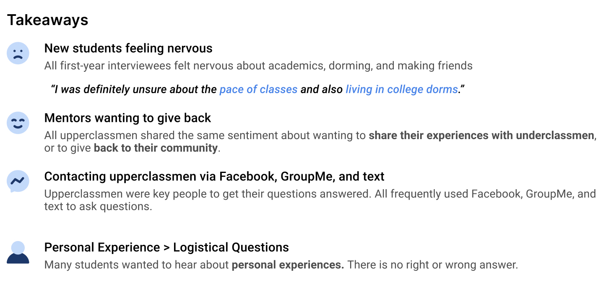
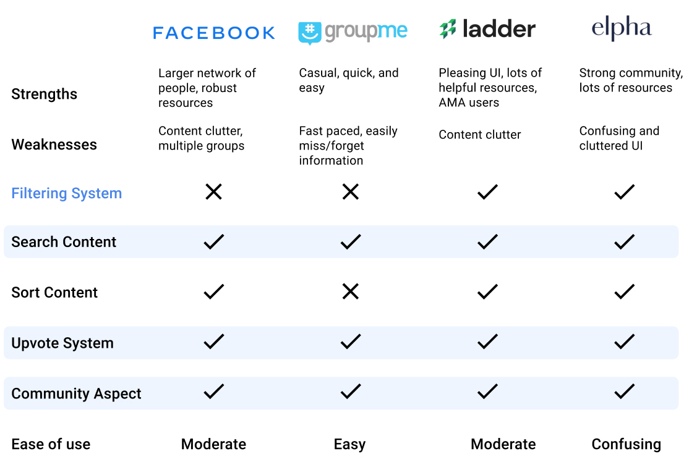
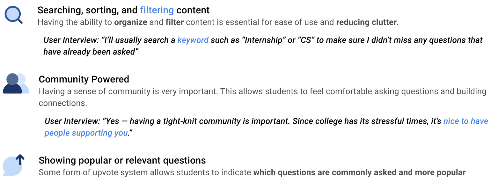
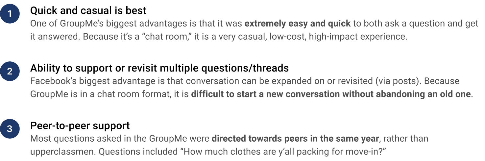
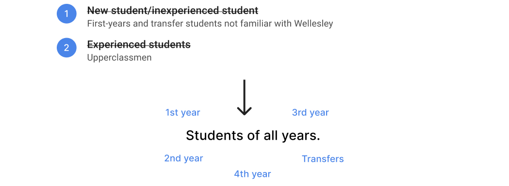
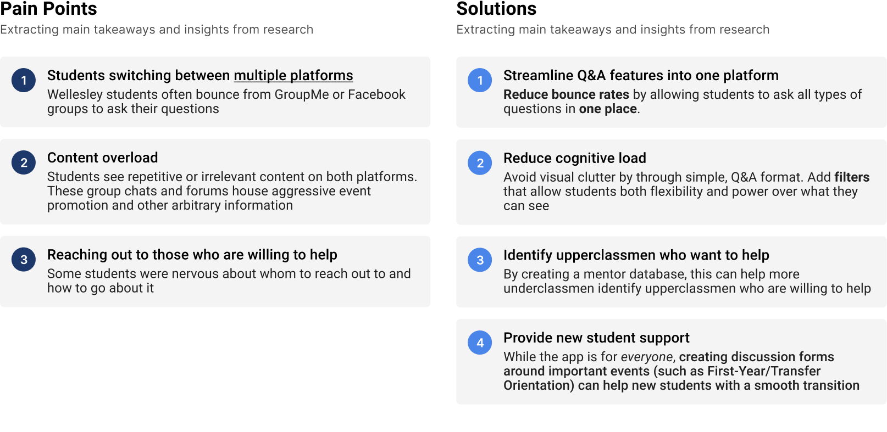
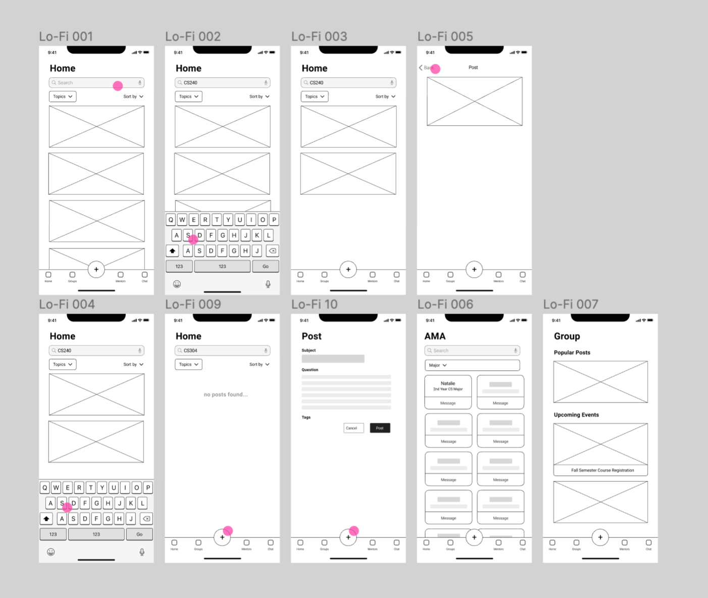
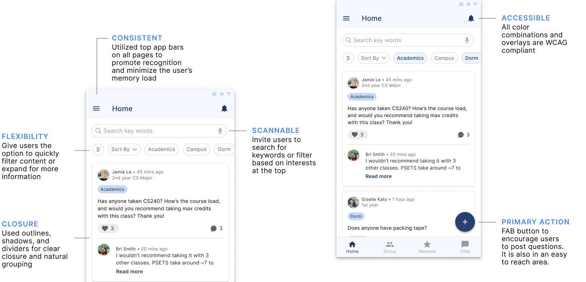

Background
Role
Research, design, and prototype mobile application
Tools
Figma
Timeline
1 week
Prototype
Figma Prototype- My Role:Research, design, and prototype mobile application
- Timeline:7 days
- Tools: Figma
- Prototype:Redesigned Course Browser
Design Prompt
Getting questions answered
Your school is gearing up to welcome a new incoming class and would like to help them adjust to campus life. Design an experience that allows new students to ask questions about the school life, and experienced students to share answers and advice. Consider the needs of a student who has questions, and the experience for a student who would like to give advice.
Preview
Sharing experiences and knowledge
Key Features:
- Streamline all Q&As to one platform
- Support discussion with upcoming events
- Create connections between underclassmen and upperclassmen through mentorship
The Problem
How do create an efficient experience for
students looking to register for classes?
Adjusting to campus life as a new student is a big deal—it can
be nerve-wracking and challenging. At Wellesley,
first semester grades are mandatory pass/fail so students
can prioritize adjusting to college life.
Facebook and GroupMe are two popular platforms Wellesley students
use to ask questions and share resources. However, these platforms
are highly saturated with other content, which clutters
relevant information or questions shared by students. How might
we improve communication between students and allow a streamlined
process for students to get their questions answered while
promoting mentorship and community?
User Analysis
Understanding new and experienced students
After chatting with three first years, one sophomore, and two seniors at Wellesley, I discovered four common themes:
Competitive Analysis
Comparing 4 platforms that foster community,
discussion, and resource sharing
While Wellesley students primarily use Facebook and GroupMe, I decided to explore Ladder.to and Elpha, two online communities/forums that allow people to ask questions or share resources related to career advancement
Insights:
Direct Observations
Deep dive into Wellesley’s two
main communication hubs
Both platforms allow students to:
- Ask questions
- Promote events/school organizations
- Share resources
- Other miscellaneous comments/posts
Insights:
Types of Questions
What are new students asking?
I went back to Summer 2019, the summer before my first-year at Wellesley, on both GroupMe and Facebook to investigate what types of questions new students asked. By observing questions from Facebook and GroupMe during my first year, I saw the following common themes:
Academics
Dorms
Campus
A LOT of questions about classes, professors, and majors.
Dorm specific questions about shared spaces, available resources, etc.
Where do I get...? How do I get to Founders?
Timing of Questions
Critical events for students
While common “types” of questions continue to pop up, even as students become more experienced, there are critical times when students ask many questions!
The following events produce a large influx of questions that are specific to a certain period of time and event:
- Course Registration (Fall/Spring)
- First-Year/Transfer Orientation
- Wellesley Traditions (Flower Sunday, Tanner Conference, etc.)
Users
“New and experienced students” reimagined
Students seeking help or asking questions can be a freshman, a senior, or even a transfer student. While the prompt makes a clear distinction between “new” and “experienced” questions, the person answering a question does not always have to be experienced or older. Anyone can ask, anyone can answer. At Wellesley, first-years often confide in their peers, as well as seniors.
Pain Points and Solutions
Best of both worlds
Low Fidelity Wireframing
Simple, quick, and intutive
At the beginning of my wireframing, I wanted to make the layout as simple as possible. Through my competitive analysis, I knew that searching and filtering through questions would be essential to the application.
High Fidelity Prototype
Questions, answers, community, mentorship
Q&As in one place.
The home screen is a feed of questions and comments/answers posted by students. Filters afford students both flexibility and control over what they see. During my first year, I found academic/dorm questions helpful, so I would definitely take advantage of this feature.
Relevant Discussions
Specific Wellesley events, such as course registration or first-year/transfer orientation, generate a large influx of logistical questions. This discussion feature gives students a space to ask away about these specific, short-term events.
Mentors
Some underclassmen struggle with finding mentors, while upperclassmen who want to help go unnoticed. This feature aims to make those who want to help accessible.
Filters
The filter interaction is meant to be simple, straightforward, and intuitive. Students can filter by four of the following topics: academic, dorm, campus, or organizations
Design decisions
Diving into Material Design
For this design exercise, I decided to use Google's Material Design components and guidelines. This was the first time I worked in a foreign design system, and I was in awe by the intention and purpose behind each component. Here are a few design decisions I made based on Material Design:
The filter bar and expanded few of the filter options replicate the layout of Google Maps and Google Drive. Thus, it is optimized to blend with the rest of the Google Suite applications.
Takeaways & Next Steps
Intentional Design
As I was exploring the Material Design compontents, I learned more ways to be purposeful with design through compontent and guideline documentation. Additionally, it was a refreshing experience working in a different design system. While working within the Material Design system, I learned the importance of creating a cohesive brand and creating components that promote accessibility and intuition.